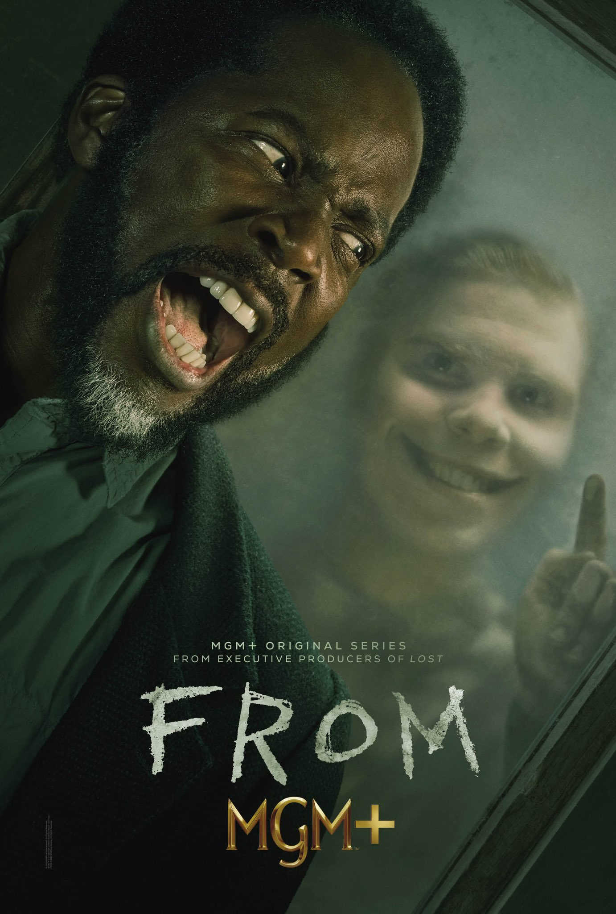

From
Created by John Griffin
Starring: Harold Perrineau, Catalina Sandino Moreno, Eion Bailey
FROM unravels the mystery of a nightmarish town that traps all those who enter. As the unwilling residents fight to keep a sense of normalcy and search for a way out, they must also survive the threats of the surrounding forest – including the terrifying creatures that come out when the sun goes down.